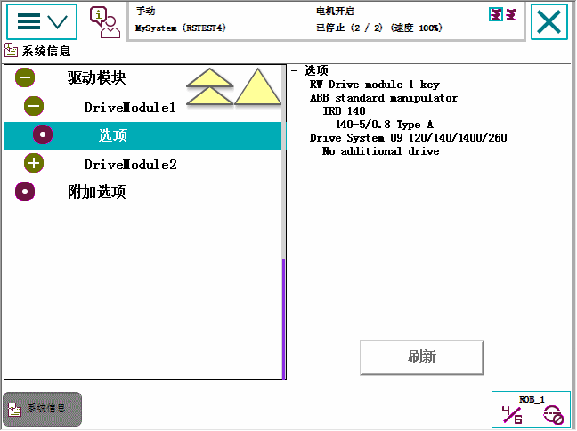

| 浏览和处理 FlexPendant - Main menu | ||
| 系统信息 | ||
| 关于 System Info（系统信息） | “系统信息”会显示与控制器及其所加载的系统有关的信息。其中有当前所使用的 RobotWare 版本和选件、控制和驱动模块的当前密钥、网络连接等等。 | ||||||||||||||||||||||||||||||||||||||
| System Info（系统信息）视图图例 |  Controller properties（控制器属性） 其中包含控制器和网络信息。展开 Controller properties（控制器属性）后，可看到以下选项：
System properties（系统属性） 其中包含当前正在使用的系统的信息。展开系统属性后，可看到以下选项：
Hardware devices（硬件设备） 其中包含已连接的所有硬件的信息。展开硬件设备后，可看到以下选项：
Software resources（软件资源） 包含与RAPID有关的信息。展开软件资源后，可看到以下选项：
|